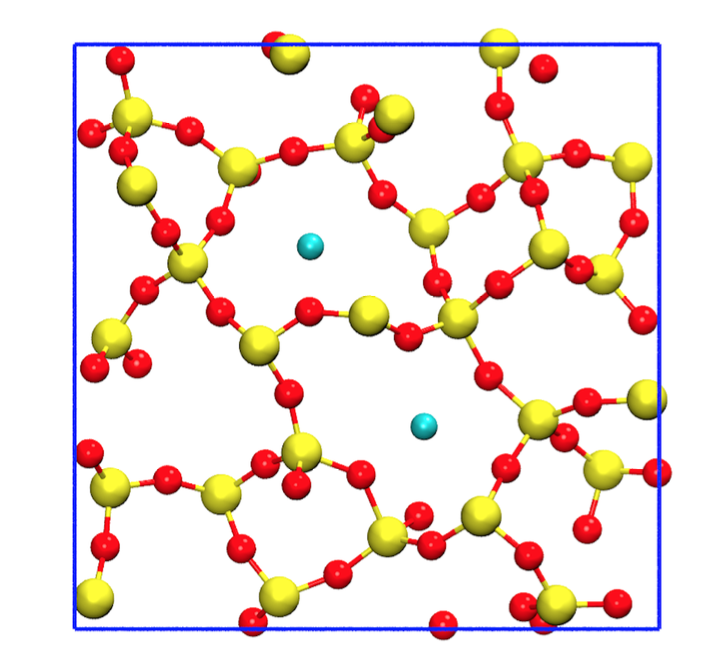
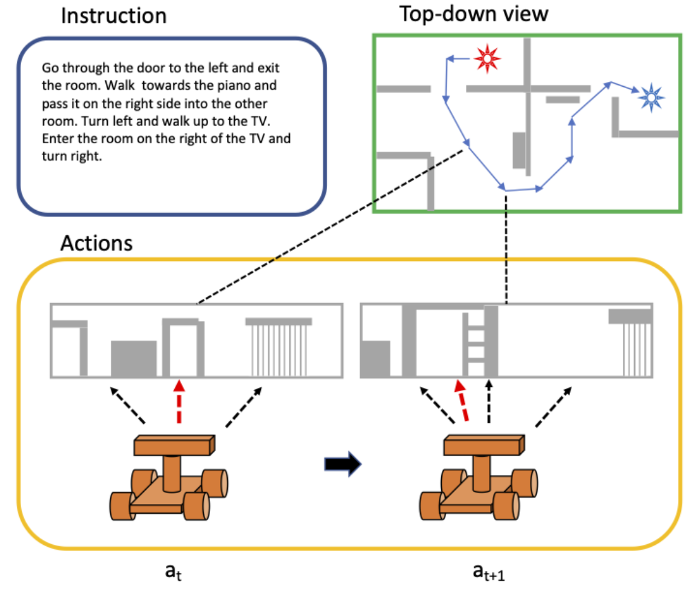

Semester Projects
Project 1
This semester project has its main focus on the memory technology CBRAM (Conductive Bridging Random Access Memory).
Technologies used: Python, Bash, Molecular Modeling
Abstract
CBRAM is an emerging resistive, non-volatile memory technology. A crucial process in terms of switching kinetics is metal ion transport through a thin high resistance film. In order to investigate Cu ion diffusion in amorphous SiO2 a python model was developed. First, the model generates an amorphous SiO2 sample. Then, initial and final states for Nudged Elastic Band (NEB) calculations are detected. Eventually, NEB simulations are performed. The model presented in this thesis enables the simulation of a large number of NEB calculations automatically. The calculated energy for Cu diffusion in a − SiO2 is 0.95 eV with most of the values lying between 0.5 eV and 1.5 eV.
Illustrations

Figure 1: 2 D cross section of a generated structure. The yellow atoms represent silicon, the red atoms represent oxygen. The two blue atoms are the copper atoms which represent the initial and final states for the following NEB simulation.
Project 2
In this project I explored the subject of Vision and Language Navigation.
Technologies used: Python, PyTorch, Bash
Abstract
To navigate an agent through a physical environment, it has to process visual and spoken instructions and clues in order to reach the goal destination. This often implies that the given information is in no way complete and missing information has to be read from context. Adding to this problem is, as almost always in any machine learning task, the problem of not enough annotated data. In this project we dive further into the already done work on Vision and Language Navigation. The Speaker-Follower model as well as the environmental dropout model are used in combination with the Room-for-Room (R4R) data augmentation technique. By combining these approaches we hope to see an improvement in generalization, i.e. a higher success rate on unseen environments. Both models are trained and tested on Room-to-Room (R2R) as well as on R4R. The best results were obtained by the environmental dropout model trained on R4R data. A 32.1 % success rate in unseen environments which is a 3.5 % increase considering previous models on the R4R dataset. The navigation error decreased from a previous best of 8.08 m to 7.58 m for our model which is an improvement of 0.5 m.
Illustrations

Figure 2: General Schematic of the room-to-room task. The orange robot agent receives a spoken instruction and a panoramic action space as input. With this input it has to decide which action at time t (at) it will take. The decided action is depicted by the red arrow. It starts from the start point (red star) and tries to reach the end point (blue star). When the robot receives the spoken instruction "stop" and is within a certain threshold distance of the goal location, it successfully solved the task.